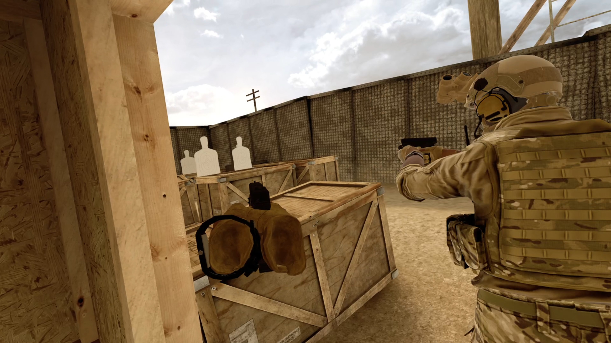

I have worked in a variety of places and fields over the past twenty years. I was a hard worker from a young age and began my working career as a dishwasher at a local breakfast restaurant and stocking shelves at the grocery store. At 17 years old I got my first apprenticeship in the construction field and then joined the United States Army at the age of 20. I spent approximately 6 years in the military, completing 2 deployments before honorably discharging in 2010. After moving back to Maryland, I pursued a career with CSX railroad and then was able to join the local union for Elevator Mechanics in their highly sought-after apprenticeship program. I look forward to building a career as a developer, a career field I have always been interested in and one that I hope provides me with many opportunities in the future.
I enjoy a variety of hobbies, most of which are done outdoors. Since I was a young child I have loved fishing, crabbing, and camping. I love the ocean and enjoy spending time on the water, whether it is at the beach or on a boat. Growing up in Baltimore, I have been a fan of the Orioles and attend a few baseball games each season. After having my son in 2021, I have enjoyed sharing these hobbies with him and took him to many baseball games during the most recent season.
My personal interests include working out, spear-fishing, and eventually getting a camper to travel around the country with. Professionally, I am interested in growing my career as a developer and look forward to learning more about building websites, apps, and applying my skills to a variety of new things I haven’t yet been exposed to. My long-term goal is to apply my military experience to the programming world and to help develop realistic military video games.